Content Outline
- How to assess business drivers that justify a data mesh initiative.
- Decision criteria for determining organizational readiness.
- How data maturity and socio-technical complexity affect feasibility.
- How data mesh compares with and complements other data architectures.
- How to frame a business case with measurable expected outcomes.
- How to structure a phased and testable adoption path.
S01 - Introducing and Comparing
Introducing the data mesh to the organization.
Comparing the data mesh to other popular data architectures.
S02 - Explained and Implementing
Previously, teams explained the meaning of data mesh. Teams also explained why the company should consider implementing it.
How much effort does it take to implement a data mesh (i.e., would the benefits outweigh the effort of its implementation)?
The presence of the first question may surprise the organization in the context of this material. Data mesh has become one of the hottest buzzwords in the industry.
The second part of focuses on implementing a data mesh. presents the possible steps toward this goal and how all the skills and knowledge the organization will learn in subsequent modules fit together.
S03 - Business Case and Drivers
To decide whether a data mesh is the right choice for the organization, it is necessary to analyze the decision drivers behind architecture selection. These drivers are split into three categories.
starts with the most crucial aspect: business reasons.
The analysis should start from the business side. If It is not possible to find a suitable business reason to start the data mesh journey, stop there.
S04 - Company and Level
Look at the business strategy at the company level or, in the case of big corporations, at the unit level. Search for the answers to questions like these.
Are teams defining the company as data driven or planning to shift the strategy to be more data driven?
Do teams have objectives and key results (OKRs), or any goal-setting methodology, that requires data to be met?
If the answer to these questions is yes, A deeper analysis can identify the specific business cases requiring data (which teams cover in the next step). If the answer is no, the work is going to be more challenging.
S05 - Business Case and Drivers
To build a viable business case for data mesh, start with answering the following questions.
Do the organization has specific business processes that are starting or ongoing with complex data needs?
S06 - Business Case and Drivers
By complex data needs, teams mean multidimensional analysis (ad hoc, AI/ML, reporting) running on top of the data coming from multiple sources. If the answers to these questions are positive, the organization might have a compelling business case.
reviews the examples of business cases and their data needs.
S07 - Described and Candace
In the example described in.
Candace realized that she combined too many business processes into one data flow. In this way, she lost the data context.
Adam and Eve had no way of supplementing raw data with their knowledge and experience.
Bob operated detached from his actual stakeholders.
The business case for a data mesh-ization of Candace’s shoveling business could improve demand forecasting for shovel ordering.
S08 - Nonfictional and Fast-moving
A nonfictional fast-moving consumer goods (FMCG) company realizes that its R&D efforts across brands are disconnected. Each R&D team produces its data and stores this in a silo.
The initial effort of developing a data warehouse is stopped when the central data team fails to develop a harmonized data model. The lack of a common language (and often contradictory requirements) make it impossible.
S09 - Business Case and Drivers
The bottleneck of the central data team’s need to cooperate with all the domains is removed. This team focuses on developing the data exchange platform and providing necessary metadata management tools.
The domain teams no longer have to modify their data structures to multiple other domains. They put their effort into developing extensive documentation of their sources.
After decentralizing the effort, domain teams (having fully documented metadata concerning other datasets) can use to their advantage historical data produced by their counterparts. A spillover benefit also arises.
As It is possible to see, the business case can range from the strategy-level company-wide cleanup to a single business process improvement. The approach and expected journey scale will differ, but the critical factor (business improvement) needs to be identified and quantified.
S10 - Organizational Drivers
Organizational drivers are situations, or the state of the business environment, in which the nature of the organization itself becomes a bottleneck. Implementing a data mesh should help remove these by shaking up the organizational structures and culture.
S11 - Complex and Socio-technically
A socio-technically complex organization owns numerous systems producing and consuming data. These systems have been developed by multiple teams, units, or individuals belonging to different chains of command.
Socio-technically complex organizations could also have a few, but enormous, teams struggling with internal communication (for example, not colocated and without a good remote work culture). It is generally accepted that socio-technical complexity along with complex data needs are the main reasons to implement a data.
S12 - Maturity Assessment
For data maturity classification, teams find the Gartner Analytics Ascendancy Model handy ( www.gartner.com/en/documents/1964015 ). This model describes four stages of data maturity.
- Descriptive Teams record what already happened.
- Diagnostic Teams know why it happened.
- Predictive Teams predict what will happen.
- Prescriptive Teams know what It is advisable to do to take advantage of what will happen.
A company introducing a data mesh should at least be scorable using this scale (i.e., it should have data collection, storage systems, and culture, thus enabling reliable access to historical data). If this is not the case, the company should start gradually learning how.
S13 - Transformation and Following
A data mesh is a socio-technical change in company operations. As much as teams emphasize the sociological part of the transformation, the technological part needs to be on par with it.
The following list is not comprehensive. However, for a good overview of the general state of the teams that will carry the brunt of the transformation, It is recommended to be considering the following.
S14 - Security and Privacy
Development operations ( DevOps ) culture.
Level of embedding security factors into the development process.
S15 - Organizational Drivers
If these concepts are not the bread and butter for the development teams, implementing good data products will be difficult for them. It could be advisable to focus on improving the engineering maturity before beginning a data mesh transformation.
It is necessary to consider a few more organizational-related drivers when deciding whether a data mesh is right for the company. presents them separately in because their weight is much lower than the drivers presented in this and the s.
It’s important to keep in mind that none of these drivers represent the necessity or sufficiency of a data mesh implementation. now discuss equally important data-driven drivers.
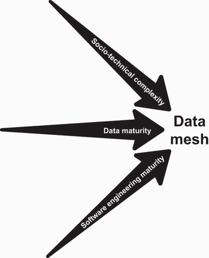
S16 - Domain Data Drivers
Domain-data drivers focus on data produced at the domain level. If it’s not clear what a domain is, please refer to for a quick explanation, or to for methods of defining domain boundaries.
S17 - Complex and Modeling
Data models for complex business cases are difficult to develop and maintain. Proper modeling requires expertise in both data modeling and the subject matter.
The solution is the decentralization of data ownership. It is recommended to consider the implementation of a data mesh because domain-focused data ownership is one of its pillars.
S18 - Metadata Management
Harmonization problems often plague companies operating with data of varied formats and from multiple sources (e.g., a combination of structured, unstructured, and semi-structured sources; or as events, files, graphs, relational and NoSQL databases, etc.). Each new data format and source in parallel increases the.
The other often-encountered problem is ensuring that the data can be found and accessed. Keeping the metadata repository up-to-date becomes a challenge.
Suppose the company struggles with consistency, harmonization, and abundant data sources. In that case, a data mesh may be a viable solution because of its focus on data productization, loosening the data coupling, and domain-focused shift in ownership.
S19 - Organizational Drivers
Companies working with high volumes of data may experience bottlenecks in cost and time as data is transformed and transferred. These bottlenecks are harrowing in the case of centralized architectures, as data needs to be imported from all the sources into a central lake.
If the company operations require time minimization between data generation and analysis or consumption (that is scalable and near real time), then ownership decentralization and data productization may work for more-efficient high-volume data processing. depicts the summary of domain-data drivers for a data mesh.
It’s important to remember that these drivers, even in combination with organizational drivers presented in, represent neither necessity nor sufficiency of a data mesh implementation. To make the consideration even more thorough, It is recommended to take into account other additional minor drivers.
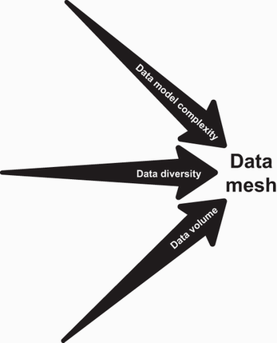
S20 - Organizational Drivers
Minor organizational drivers are not critical for the journey (but could be considered when evaluating how costly the journey would be If the organization decides to start it). It is generally accepted that the data mesh is the next stage in architecture evolution.
If these areas in the company are underdeveloped, but the major drivers described in sections 2.1.2 and 2.1.3 still push the organization toward a data mesh, then It is necessary to consider the additional effort of required cultural change management. The following factors influence estimating costs.
S21 - Maturity Assessment
One of the pillars of the data mesh is federated data governance, which describes in detail in. Irrespective of the current data governance model, the higher the data governance maturity level, the easier the transformation will be.
To evaluate the data governance maturity, teams propose using the Gartner Data Governance Maturity Model, not to be confused with the Analytics Ascendency Model teams referred to in (see http://mng.bz/XZl6 ). It divides governance maturity into six tiers.
S22 - Governance Model
- Aware Project-oriented strategy, efforts to document the data-related risks begun, siloed information consolidation.
- Reactive Formalized objectives for information sharing, localized integrations, and point-to-point interfaces.
- Proactive The data governance team established, data-related policies adhered to, locally maintained data models aligned with central architecture guidance.
- Managed Cross-functional information problems addressed by the data governance body, enterprise-level approach to information needs.
S23 - Maturity Assessment
If the company is at early maturity stages (e.g., either aware or not), implementing federated data governance may require a lot of time and effort.
S24 - Self-Serve Platform Design
Even if the software development teams are mature, their world is separated from the world of data in many companies. In such a case, the (mis)communication between these worlds often creates bottlenecks in data operations.
Suppose the company already hires apt data engineers. The organization will still need to develop a strong platform team to prepare a user-friendly environment for joint software and data development teams to form.
If the software development team has insufficient experience working with data, and the organization also lack experienced data engineers, It may be appropriate to need to consider recruiting data-savvy engineers. This cost can be added to the calculations.
S25 - Domain and Core
Domain orientation is at the core of data mesh. Even if the teams do not consciously use the domain-driven design approach, the organization might consider how closely they follow its principles in their day-to-day operations.
How close are they to the core of the domain? How closely does their work follow domain logic?
S26 - Domain Data Drivers
Do they collaborate with domain experts?
Teams covered some of these questions separately when considering other drivers. However, putting them together may provide a clear picture of the difficulty in implementing the domain ownership principle in the organization.
None of the described drivers, alone or in combination, give the organization a clear go/no-go answer as to when It is recommended to start the data mesh journey (neither does their combination). To understand whether a data mesh is the right path for the organization (or even.
S27 - Business Case and Drivers
It is necessary to ask yourself one critical question: is the current socio-technical architecture capable of supporting the current and planned business operations sufficiently? That is why, at the beginning of, teams encouraged the organization to consider the business case.
The operations are slowed by data not being easily findable or accessible by consumers.
The data consumers spend too long aligning with software and/or data engineering teams.
The central data team has an arm-long backlog of problems to deal with (e.g., maintenance of data models and catalogs, deciding on access rights, or costs of to-and-fro data transfer).
If any of these issues apply (but only to a minor degree; or if the inconveniences they cause are not significant), data mesh is less likely to be a worthwhile investment. However, suppose that the organization observe any combination of the previously mentioned problems in.
S28 - Solutions and Alternatives
Solutions described can be considered as either complements or alternatives to a data mesh. This depends on whether teams look at them as technology or socio-technical architecture, respectively.
Teams hope that this discussion will help the organization decides whether any of these solutions is sufficient for the organization’s needs. It is also possible to select them as technologies to be used as elements of the data mesh.
Each architecture describes here comes in many flavors. In each organization, they undergo many tweaks, adjustments, and improvements.
S29 - Warehouse and Central
The enterprise data warehouse is an approach to storing data in the central data repository that the central data team owns. Data is ingested to the data warehouse by using the extract, transform, load (ETL) or extract, load, transform (ELT) approach, usually directly from.
In the example data warehouse in, It is possible to see that teams A, B, and C are producing data and do not own the pipelines used to extract data from their sources. A central data team owns the pipelines.
The following illustrates when It is recommended to consider implementing an enterprise data warehouse instead of a data mesh.
Most of the sources of the data are structured.
The current data use cases are well known and not likely to expand or evolve.
The organization extract value from data using mainly BI, reporting, and data analysis.
The organization rely on a small number of unchanging source systems.
Sources are owned by a small number of teams.
The central data team has expertise in data warehouse technologies.
As teams stated in the beginning, the enterprise data warehouse is a socio-technical approach, but a data warehouse is an underlying technology. The technology itself is not an alternative to a data mesh.
The following shows when It is recommended to consider using a data warehouse in addition to a data mesh.
At least one of the domains has mostly structured data sources.
The organization is extracting value from that domain’s data by using BI, reporting, and data analysis.
The data engineers have expertise in data warehouse technologies.
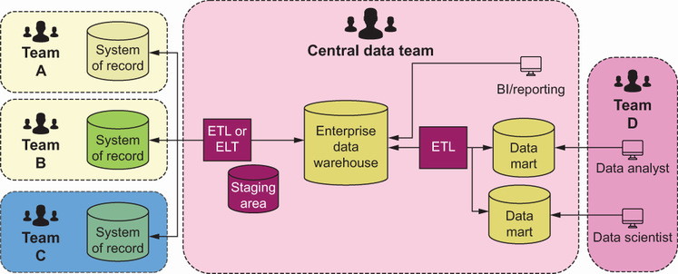
S30 - Metadata Management
Teams mentioned data lakes in. Here will go into greater detail.
A data lake has numerous zones (e.g., process zones used to store data already processed but not yet ready for production or accessed by end users; or access zones, with data already curated and ready to be accessed by consumers; see ). A data.
A data lake is often described as more than a storage pattern. It also offers many related capabilities (ingestion mechanisms, security, metadata, catalog, processing engines, access mechanisms, and many others).
The common socio-technical architecture of the data lake is almost the same as the enterprise data warehouse. As shown in, all data-related components are owned by the central data team.
The organization deal with big data (volume, velocity, and variety).
The organization has structured, semi-structured, and unstructured sources of data.
It is hard to foresee all the data use cases.
Data sources are owned by a small number of teams.
Consumption patterns are not yet established.
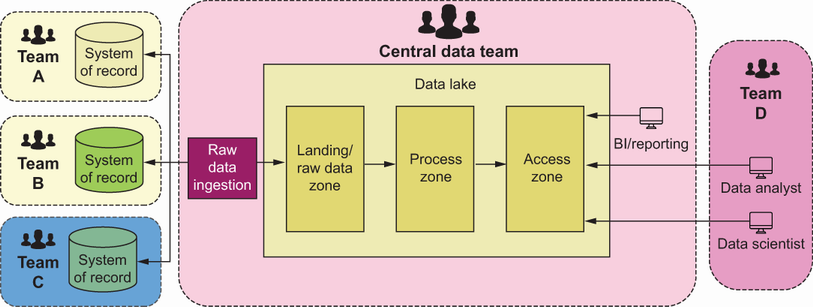
S31 - Lake and Lakehouse
A data lakehouse is a combination of a data warehouse and data lake. It is built on top of data lake with added features like these.
S32 - Governance Model
Schema enforcement and governance.
As It is possible to see in, the socio-technical architecture is the same as the one described for a data warehouse and data lake. The following are examples of when It is recommended to consider implementing a data lakehouse.
Some use cases are well known and rely on structured data.
The organization is extracting value from data by using BI, reporting, and data analysis.
The organization has structured, semi-structured, and unstructured sources of the data.
It is hard to foresee most of the data use cases.
The organization is dealing with big data.
Sources are owned by a small number of teams.
Consumption patterns are not entirely established.
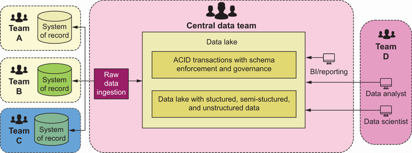
S33 - Self-Serve Platform Design
Data lakes, warehouses, and lakehouses, in their standard implementation, rely heavily on a central data team. In the experience, this is their fundamental weakness when the company has a lot of data sources and complex usage patterns.
From a purely technical point of view, these three architectures may pose an excellent computational environment for a data mesh. This is because the elements of a data mesh may be constructed with existing infrastructure.
A data mesh will not require the organization to replace the technology into which the company has already invested millions. A data mesh will ensure that organizational inefficiencies of over-centralization do not throttle down the platform’s potential.
The three previously described solutions have a common element—namely, the centralized data team. The next solution is on the other extreme of the centralization scale.
S34 - Governance Model
A data fabric is a technology-centric solution for data management. It provides a low-code or no-code platform to connect data sources with consumers alongside governance applied on top of it.
Data fabric solutions utilize AI/ML and knowledge graphs in addition to metadata to make an integration and delivery process as automated as possible. A data fabric is a vague concept, and, unfortunately, it is next to impossible to find a precise definition.
By definition, a data fabric has no implicit socio-technical architecture. This is why it is hard to consider it as a data mesh alternative.
The organization has structured, semi-structured, and unstructured data sources.
The organization is dealing with big data.
There are many data sources, and they are owned by many teams.
The organization is dealing with many different ways to consume the data.
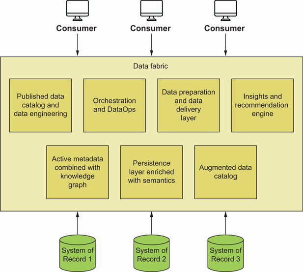
S35 - Complex and Summarized
Teams’ve summarized the comparison between popular data architectures and the data mesh in. This Venn diagram uses bubbles previously described in sections 2.2.1, 2.2.2, and 2.2.3.
As It is possible to see, a data mesh is a solution for complex organizations from both a socio-technical and data needs perspective. If the data is diverse, a data mesh is also a good fit.
The main conclusion from can be summarized as the following key point.
If the organization decides that the socio-technical and data complexities in the organization may justify giving data mesh a shot, the will show what takes to implement one.
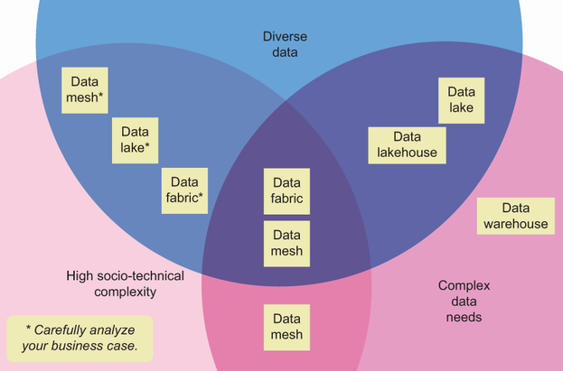
S36 - Whether and Performed
If the organization performed the driver analysis described in, It is recommended to know whether the implementation of a data mesh would bring value to the organization. Now is the right time to consider the requirements to make it happen and whether they are worth the.
will not get into details of technological solutions and their associated costs. There are simply too many possibilities to list them all here.
S37 - Business Case and Drivers
In the experience, a data mesh implementation works best if its development is similar to CI/CD-based software development. Small steps taken in cycles ensure quick wins, rapid feedback and correction ability, and flexibility in reaction to changes.
Before the organization jump headlong into the transformation, It is recommended to prepare foundations for the change. focuses on elements of the preparatory phase.
Teams previously discussed the importance of the business case, which will serve as a reference for all other decisions. The second element of the preparatory work is ensuring that the organization has enabling structures in place.
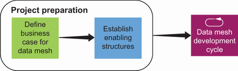
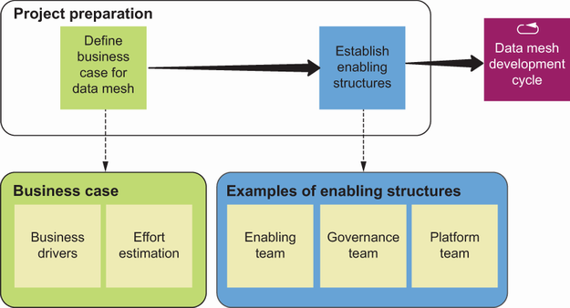
S38 - Business Case and Drivers
The latter two are optional and will depend heavily on the setup. To learn more about these topics, read chapters 6 and 7, respectively.
With an initial structure in place, It is possible to start the development cycle. focuses on elements of the development cycle.
The cycle should always start from a business case that can be enabled with data. Choose the business goal with clear measures of success.
On the other hand, the modification of enabling structures should take place at the cycle’s end. This is when all misalignments or inadequacies are well defined.
The development of data products needed to solve the business case is at the core of the data mesh development cycle. details the data product development cycle.
It is recommended to start with a good understanding of consumer needs. This results from the business case.
With the business case solved, the data product in place, and enabling structures modified (if needed!), rinse and repeat. All elements of a data mesh development are presented in.
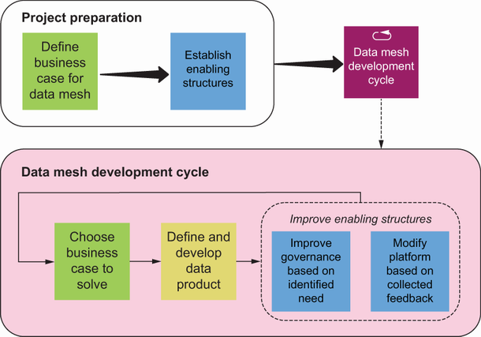
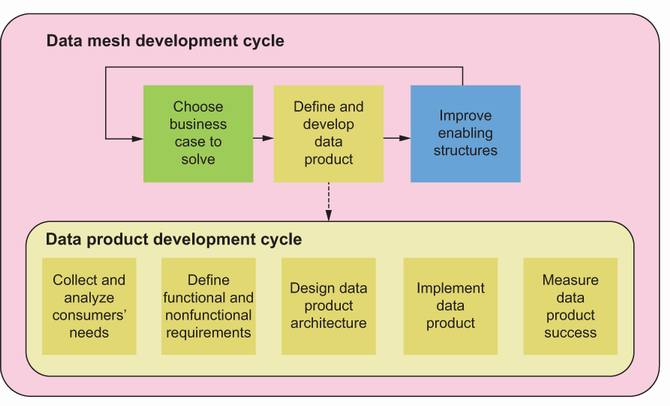
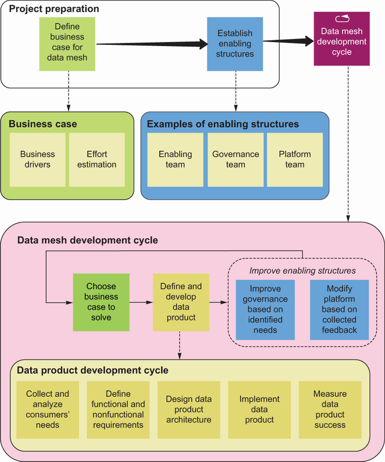
S39 - Business Case and Drivers
Previously, teams described how Candace introduced a data mesh into her organization’s work.
She identified the business case: profits were low, and data utilization was overly complicated and inefficient.
She prepared for the project.
She appointed herself as an enabler and read Data Mesh in Action from cover to cover.
She divided her business into domains and pushed ownership of data, information, and some decisions to the main domains of her operations. Instead of collecting their raw data to later transform and analyze, she presented domain owners the problem.
It’s worth noting that she profited even before the first development cycle started! The next year, the team went through the first development iteration.
The business goal was developed to improve the procurement forecast.
The data products were defined: Adam’s and Eve’s shovel use estimations.
The data products were developed: online spreadsheets for Adam and Eve.
She reviewed the results and planned the next cycle iteration.
As It is possible to see, the first data mesh implementation cycle doesn’t have to be long or strenuous, or encompass all the data mesh properties to bring the business value. will expand on this topic in.
S40 - Person and Implementation
Irrespective of the scope and range of the planned data mesh implementation, It is necessary to ensure that there is a person responsible and accountable for its progress. Because the data mesh boundary encompasses both data and software worlds, identifying the right person to lead.
Considering the nature of the data mesh implementation drivers, teams expect that a data mesh will usually be implemented in high socio-technical complex environments. This means one person almost surely will not be enough.
S41 - Governance Model
The organization may or may not have a governance structure. If it suffices to achieve the goal, It may be appropriate to choose to let sleeping dogs lie for the first iteration.
S42 - Enabling and Support
The enabling team needs to support domains in developing its data products. The team members should facilitate cooperation between subject-matter experts, data engineers, and software developers.
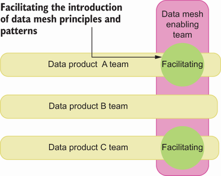
S43 - Data Product Team Structure
The enabling team must be able to support the platform team (should one be developed). This means the enabling team will have to conceptually align data product teams’ requirements and the platform’s capabilities.
The platform team should provide its services by using the X-as-a-service pattern (anything as a service), and so it might be PaaS, SaaS, or IaaS. When a platform team is developing new platform features, it should collaborate with one of the other teams to.
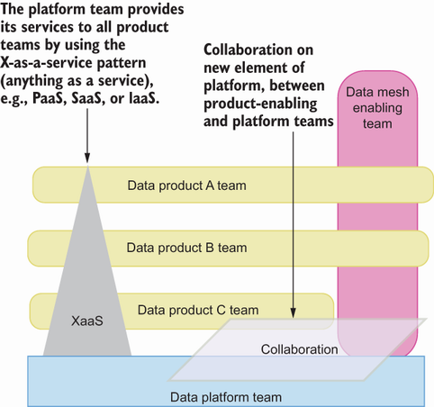
S44 - Maturity Assessment
Depending on the organization’s governance model and maturity level, facilitating governance can be the most challenging part of enabling teamwork. A data governance team needs to have the gravitas to carry out its duties.
The key to success is to clarify the governance role and area of responsibility in the data mesh. Parties leaning strongly toward extreme governance centralization or decentralization will have to understand the benefits of a federated model before being ready to accept it as.
Teams list the main advantages of federated governance in. It would assist the enabling team to know them well before approaching potential governance team candidates.
As It is possible to see, the enabling team will be extremely busy throughout the transformation. reviews the development cycle this team will support.
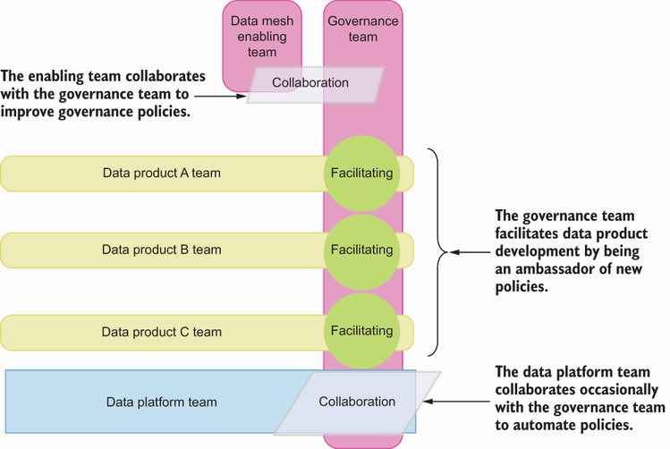
S45 - Governance Model
The data mesh development cycle is focused on achieving business goals by using data. The cycle includes a definition of the goal, data required to achieve it, development itself, and, if the situation requires it, adjustment of the data governance environment or central platform.
It probably won’t be the case in the early data mesh development stages, but when the data mesh spans multiple domains, each domain will have its own development cycle. These domains will, however, have to align their development with the works of central teams.
S46 - Goal and Required
Teams described the drivers, which may help the organization identify the pain points It may be appropriate to wish to remove when using a data mesh. However, just naming them may not be enough.
First, It is necessary to explain why the organization think it is even worth achieving the goal. What is the added value to the business?
Second, It is necessary to make sure the goal is presented in the context of the work required to achieve it. And teams are not talking only about balancing the benefits of achieving the goal and the effort needed to achieve it.
Third, the business goal should have an associated responsibility assignment matrix—such as RACI (responsible, accountable, consulted, and informed), PARIS (participant, accountable, review required, input required, sign-off required), or one of the scores of other similar participation models. Having a matrix will ensure that the.
S47 - Goal and Work
Teams mentioned earlier that the goal needs to be presented in the context of the work required to achieve it. Now it’s time to dig deeper into one of these work areas: defining what data is critical to achieving the goal and how it.
Teams propose the organization start with identifying data use cases. This can be done quickly and efficiently by answering these questions.
Who are the actors critical in achieving the goal? (If the organization described the goal correctly, answering this question should not be hard.).
S48 - Sources and Access
What is the data they use?
Where is the actual source of data they use?
It is recommended to end up with a list of data sources and their access systems. The knowledge and techniques presented in could be used to identify which of these sources could belong to the same domains.
The other problem is the data access systems used by the actors. They can be combined or transformed into consumer-oriented data products.
S49 - Business Case and Drivers
Whatever method the organization will use to define their boundaries, will help the organization turn data sources into data products. Developing data products does not differ much from developing any other IT product, except that software engineers, domain experts, and data engineers are engaged in the whole.
This step is essential for the long-term success of the initiative (second only to the business case selection). Even If the organization make errors in the data product design or implementation, they can be corrected with good feedback loops.
The most important thing for the organization to remember is that in the feedback collection, It is necessary to put the same emphasis on discovering the pain points of two distinct, but at this stage, equally important, groups.
S50 - Feedback and Methods
The importance of understanding the needs of data consumers (actors responsible for delivering business value) is, hopefully, obvious. However, it doesn’t mean that the problems encountered by developers are any less important.
If the organization’re unsure how to collect the feedback, It may be appropriate to use any combination of the following methods and their variations.
- Email and chat Both methods are equally convenient for feedback givers but unwieldy and require manual processing of results by the feedback collector.
- Team meetings These allow the organization to chain questions and clarify answers but might be hard to organize and considered an unappreciated distraction from work. Also, some of the feedback content may be forgotten by stakeholders between meetings.
- Feedback reports These provide a convenient way of collecting structured qualitative and quantitative feedback but at the risk of losing details of atypical situations.
Or It is possible to try one of the feedback collection platforms, designed to extract and aggregate the required information, but which come at the cost (financial and time) required for stakeholder training. It is recommended to look at the feedback data and search for repeating problems and.
S51 - Best and Policies
It is recommended to always ensure that identified problems are solved systemically. Occasionally, the development and dissemination of best practices will suffice.
In the experience, this is a drastic measure. Devising policies for each and every minor concern leads to either paralysis or, in the best case, a slowdown of operations and possibly the quiet disregard of policies.
S52 - Business Case and Drivers
This step of developing the platform depends on the specifics of the business case and the nature of the data environment. If the derivation of business value requires modifying the existing platform or building a new one, now is a good time to undertake.
Keep in mind that throughout the whole data mesh development cycle, the platform in a data mesh should be treated as a product that can enable two things.
S53 - Governance Model
Automating the implementation of governance policies.
Before the round of data product development and feedback collection, it is next to impossible to decide on the required scope of work on the platform. The platform development team will be properly equipped to plan its work for the next development cycle with.
the organization learned about the business context of a data mesh and the groundwork required for a successful kickoff of a transformation project. The will show how It is possible to prove the assumptions related to a data mesh business value with a quick MVP.
S54 - Business Case and Drivers
A data mesh is not a business goal. What is the company’s strategy?
Identify the business case with complex data needs. Next, consider whether a data mesh would help solve otherwise persistent problems, and then work from there.
There are alternatives more suitable for different business needs. A data mesh should work well in an environment with high socio-technical complexity, complex data needs, and diverse data.
Identify all transformation drivers: organizational (e.g., socio-technical complexity and data and software development maturities); as well as related to domain data (e.g., the complexity of domains and their data, and data diversity and volume).
Lay the groundwork of the data mesh (i.e., develop the business case and set up governance and enabling teams). Also, ensure that data products, data governance, and central platform development will be sufficiently supported and facilitated.
Develop the data mesh in cycles built around adding new data products to the mesh and collecting and analyzing feedback, and modify platform and governance only if needed.
S55 - Core Concept
1 The what and why of the data mesh.
Key takeaways
- How to assess business drivers that justify a data mesh initiative.
- Decision criteria for determining organizational readiness.
- How data maturity and socio-technical complexity affect feasibility.
- How data mesh compares with and complements other data architectures.